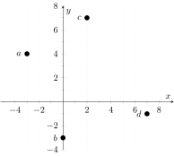
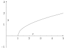

This is the (non randomized) review to help check that the you have good footing on sections 4-7 before moving on. This is not
intended to represent the length or plausible difficulty of an exam on this topic; it should help direct you to the sections where you
are weakest/strongest in your studying.
1 : In a residential neighborhood most families have multiple cars; at least one for each parent and maybe one for the
kids over 16. You have learned to recognize every car in your neighborhood and which house it belongs to. What is the domain of
this association (recognizing the car and then recalling which house it belongs to)?
The houses in the neighborhood. Your
individual neighbors. The cars in the neighborhood.
1.1 : What is the codomain?
The houses in the neighborhood. Your individual neighbors. The cars in the
neighborhood.
1.1.1 : Is this association a function?
No, each house has multiple cars. No, each car belongs to multiple people. Yes,
each car belongs to one house. Yes, each house has one car.
2 : You decide to plant pines trees to provide a privacy screen around a piece of your property. Use the following
information to answer the questions.
- You choose white pine as it is a fast-growing variety.
- At the time of planting, the trees are all 2 feet tall.
- This species of tree grows an average of 2.7 feet per year.
- The land you wish to screen is 14 feet by 20 feet.
- You think pine trees are quite pretty.
2.1 : After looking up information you determine it is easiest to first figure out how high the trees will be (on average)
each year, and then use that to determine how long you must wait. When writing a mathematical expression for this, what should
the independent variable be?
The height of the trees. The time in years. The height of the trees at planting.
2.1.1 : Does this expression represent a function?
Yes, there are multiple trees to track per year. Yes, for each year there
is only one height that we are calculating (the average). No, for each year this is only one height that we are calculating (the
average). No, multiple trees means there will be many different heights at the end of each year. No, there are multiple years
where trees could be the same height.
2.1.1.1 : Write an equation describing this relationship using for the time in years and for the height of the trees in feet. =
2.1.1.1.1 : Identify the domain, codomain, and whether this equation is a function.
Domain: height in feet;
Codomain: time in years;
Is it a function? yes Domain: time in years;
Codomain: height in feet;
Is it a function? no Domain: height in feet;
Codomain: time in years;
Is it a function? no Domain: time in years;
Codomain: height in feet;
Is it a function? yes
3 : Does the following graph depict a function?
Function Not a function
Use the following graph for Problems 4-7.
4 : Is the function that is shown continuous?
Continuous Not continuous
5 : Which points mark local extrema? (Select all that apply).
5.1 : Identify whether these points are maxima or minima.
Point b is a
Maximum Minimum
Point d is a
Maximum Minimum
Point f is a
Maximum Minimum
6 : Which points are absolute extrema? Select all that apply.
6.1 : Is this point a maximum or minimum?
Maximum Minimum
7 : Identify the zeros of the function. (Select all that apply.)
8 : Does the following graph depict a function?
Function Not a function
9 : Use the plot to answer the questions.

What are the coordinates of point ? (,)
What are the coordinates of point ? (,)
What are the coordinates of point ? (,)
What are the coordinates of point ? (,)
Match the graph manipulations to the appropriate parent functions (NOTE: not the actual function of the graph, but the
parent function of the graph).
A)
B)
C)

D)
E)
F)
10 : Which graph would most properly be said to have a parent function of
Plot:
11 : Which graph would most properly be said to have a parent function of
Plot:
12 : Which graph would most properly be said to have a parent function of
Plot:
13 : Which graph would most properly be said to have a parent function of
Plot:
14 : Which graph would most properly be said to have a parent function of
Plot:
15 : Which graph would most properly be said to have a parent function of
Plot:
16 : Which of the following are examples of independent variables?
= height of a wall. You are trying to calculate the
surface area of a wall for painting. = total cost of installing new windows. You are modeling the costs for building a house and
you know each new window costs $140. = the number of katanas purchased by a martial arts school. You know each katana
costs $50 and you are trying to calculate the total cost to equip the school with katanas. = the average price of gasoline from
January 1, 2018 to August 1, 2018. You are running analysis on cost to consumers for driving in the first three quarters of 2018,
given driving distance habits and gasoline price per gallon for each week.